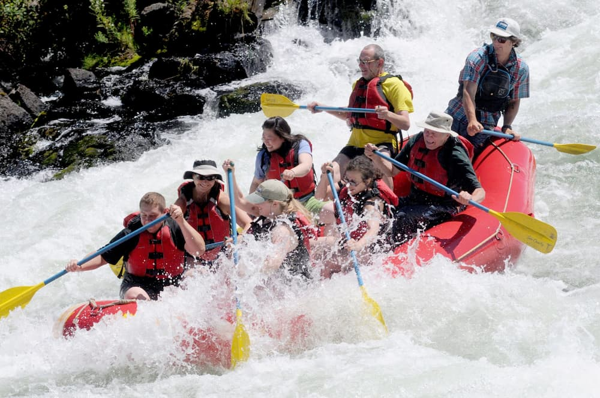

Here at Osun River Rapids, our whitewater rafting trips are designed to provide thrill-seekers with an unforgettable experience on the water. Our expert guides ensure safety while you navigate through stunning landscapes and challenging rapids. Oars Up!

White Water Rafting
History
Osun River Rapids was founded in 1995 by a group of adventure enthusiasts who wanted to share their love for the great outdoors. Starting with just a handful of rafts and a passion for exploration, we set out to make the river accessible.

Today, the company has grown into a leading provider of whitewater rafting experiences. We continue to honor our roots by focusing on safety, environmental conservation, and creating unforgettable memories for every guest.
Adventure Awaits You!


